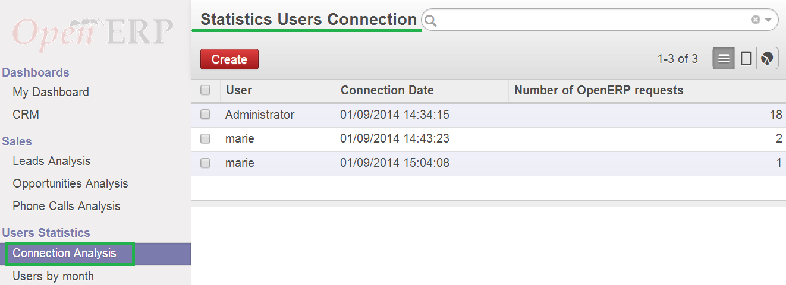
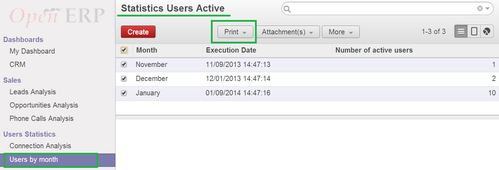

<section class="oe_container">
    <div class="oe_row">
        <h2 class="oe_slogan">Users Statistics</h2>
        <h3 class="oe_slogan">This module allows to display statistics about users of the system.</h3>
        <ul>
 <li>All connections with the number of OpenERP request during this connection.
        </ul>
        <ul>
<li>Each month a scheduler is launched to compute the number of active users in this database.
        </ul>
        <ul>
<li>You can print a report file of active users by month.
        </ul>
        <div class="oe_span6">
            
        </div>
        <div class="oe_span6">
            
        </div>
    </div>
</section>